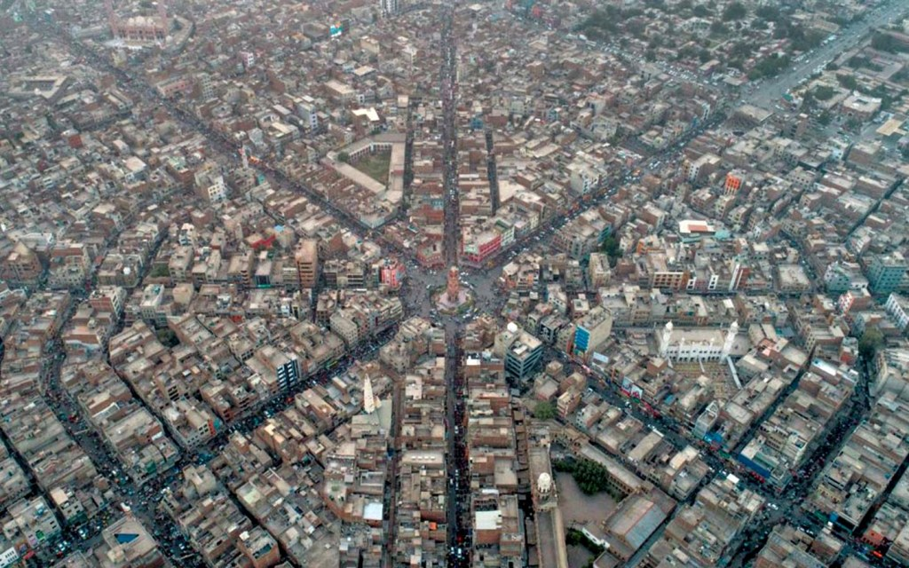
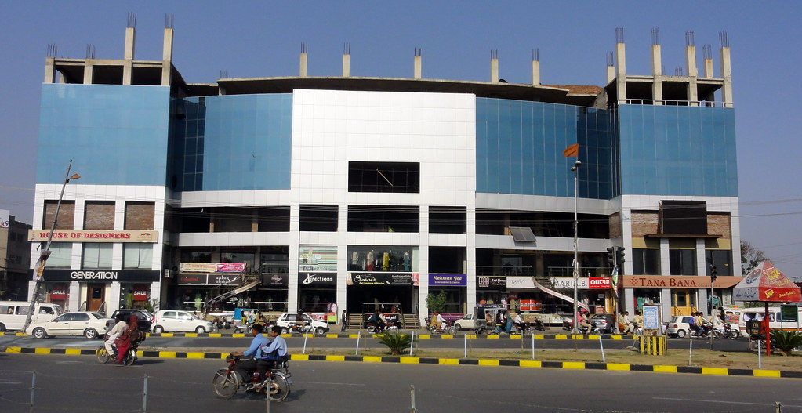

Faisalbad City of Pakistan
.jpg)
.jpg)
.jpg)
Clock Tower |
It was built in 1905 by the British when they ruled much of South Asia during the nineteenth century. The decision to build the clock tower on this spot was taken by the then Jhang deputy commissioner Sir James Lyall. |
However, most people do not know that Faisalabad's first clock tower had been built by the British in the vicinity of the Irrigation Department office, and served various purposes; first, the clock, installed on the tower used to ring every hour to update the people of the area about the time; secondly, the tower had ...However, most people do not know that Faisalabad's first clock tower had been built by the British in the vicinity of the Irrigation Department office, and served various purposes; first, the clock, installed on the tower used to ring every hour to update the people of the area about the time; secondly, the tower had ... |
Karkhana Bazaar was leading towards industrial while Bhawana Bazaar, Jhang Bazaar, Aminpur Bazaar, Chiniot Bazaar and Montgomery Bazaar were also named after the cities towards their direction. These eight bazaars cover a total area of 110 acres connected with each other through a circular road called “Gol Bazaar.” |
 |
.jpg_1659424121.jpeg) |
The foundation stone of UAF was laid in 1906 with the name of Punjab Agricultural College and Research Institute, Lyallpur which was upgraded as the West Pakistan Agricultural University, Lyallpur in 1961 and now the University of Agriculture, Faisalabad since 1973.The University of Agriculture, Faisalabad (Urdu: جامعہ زرعیہ فيصل آباد), (formerly: Punjab Agricultural College and Research Institute), is a university in the city of Faisalabad, Punjab, Pakistan. It was established in 1906 as the first major institution of higher agricultural education in the undivided Punjab. |
FEE STRUCTURE UAF, SUB-CAMPUS, TOBA TEK SINGH, Winter Semester 2022-23Sr. # Description 1st Semester 2022-23 (Amount in Rs.)2 BS Chemistry , Zoology 35,0003 BBA 50,0004 B. Sc (Hons.) Human Nutrition & Dietetics 48,125 |
.jpg) |
.jpg)
| < |
RegistrationFull Name *Email *Phone Number *Preferred Course * The courses we offered are in our courses page. Kindly check and add your preferred course.Next of Kin Name *Next of Kin Number * |
Some of the standout qualities of KIPS Colleges, among many others, are comprehensive study, revision and test sessions, a highly qualified and experienced faculty, counseling sessions, and scholarships. |
Average KIPS Academy Teacher monthly pay in Pakistan is approximately Rs 28,615, which is 38% above the national average. Salary information comes from 2 data points collected directly from employees, users, and past and present job advertisements on Indeed in the past 36 months. |
schools |
.jpg) |
.jpg)
| .jpg)
| Nowadays, school has become the first stepping stone in the life of a child, wherein he/she learns a lot more than just rote learning. Developing hobbies, refining them, learning basic etiquettes, getting skilled at multi tasking, developing social skills are some of the many things that a school equips a child with. |
.jpg) |
.jpg) |
|  | Food is one of the basic necessities of life. Food contains nutrients—substances essential for the growth, repair, and maintenance of body tissues and for the regulation of vital processes. Nutrients provide the energy our bodies need to function. The energy in food is measured in units called calories. |